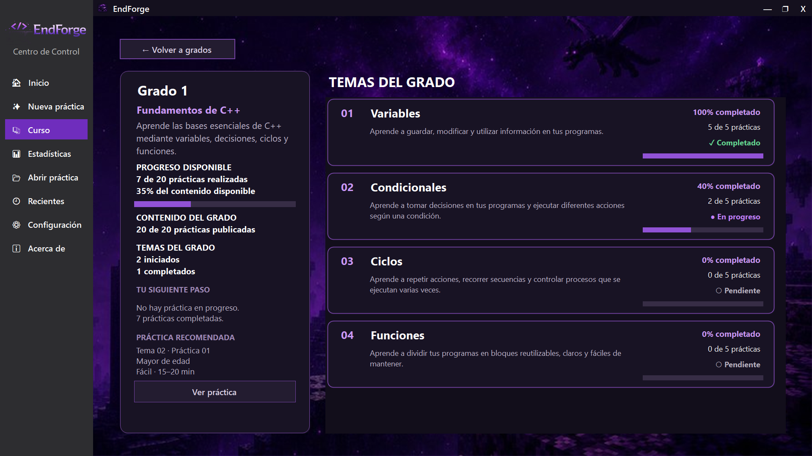
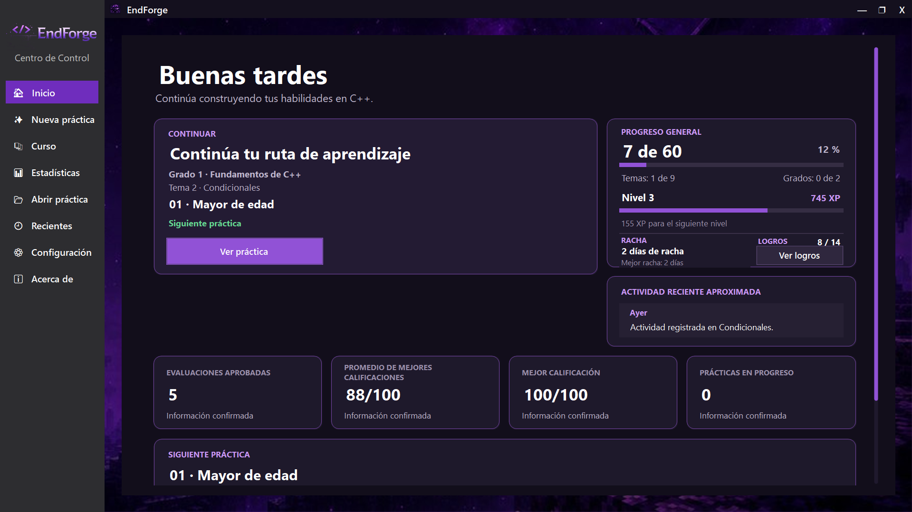
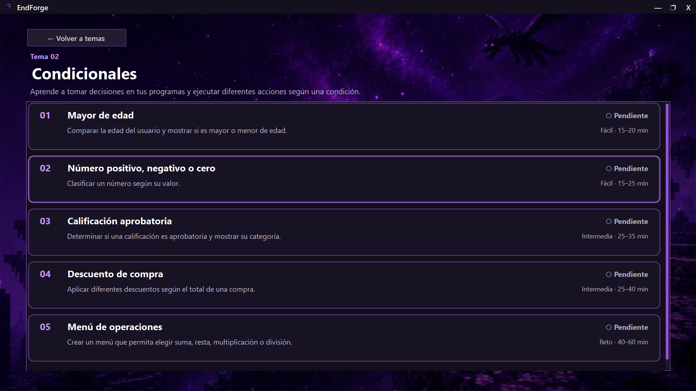
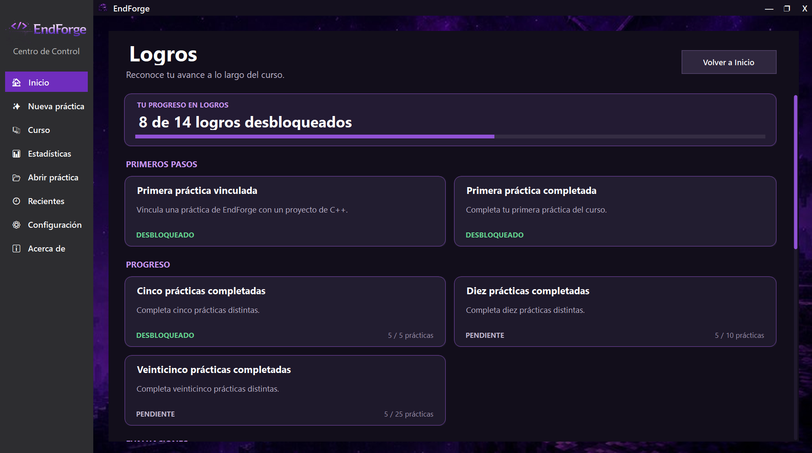

Aprendizaje gratuito
Accede a todo el contenido sobre C++ sin costos ocultos ni suscripciones.
Una aplicación diseñada para acompañarte desde los primeros conceptos hasta temas más avanzados mediante teoría, prácticas y progreso.
Descargar Conocer EndForge
Accede a todo el contenido sobre C++ sin costos ocultos ni suscripciones.
Avanza desde los fundamentos básicos hasta estructuras de datos complejas organizadas por grados.
Mantén la motivación con un sistema de puntos (XP), rachas y medallas a medida que completas prácticas.



Comienza tu viaje de aprendizaje en C++ hoy mismo. Descarga la versión oficial para Windows.